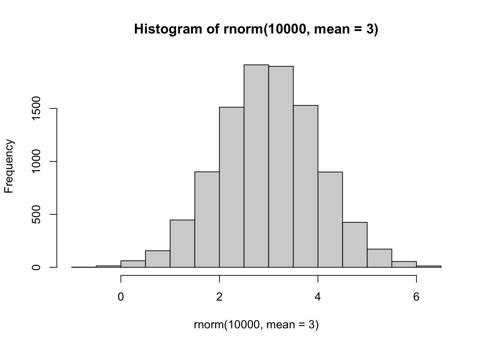
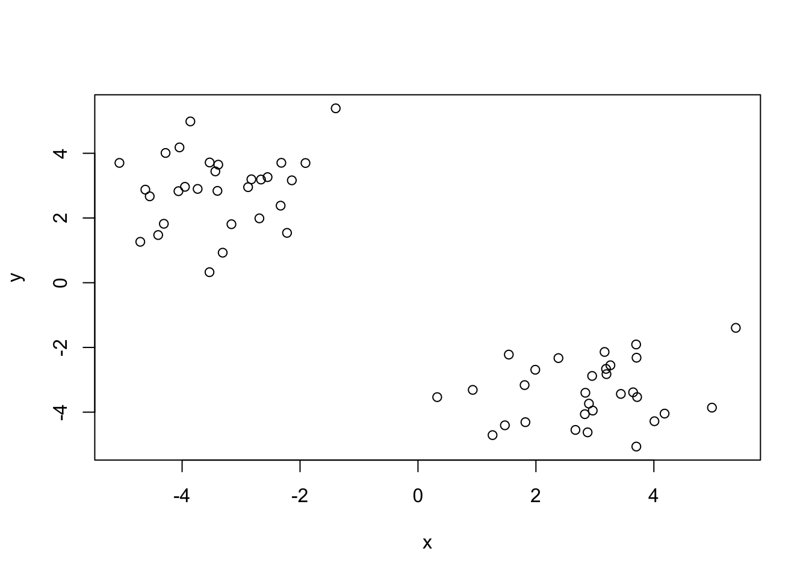
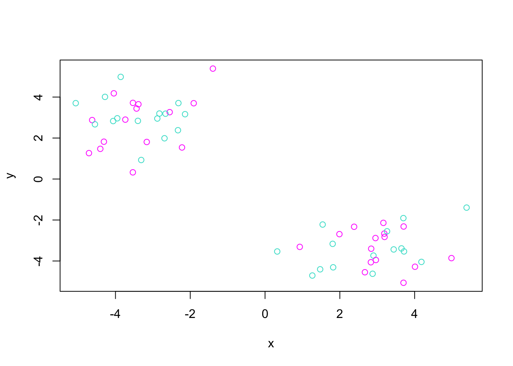
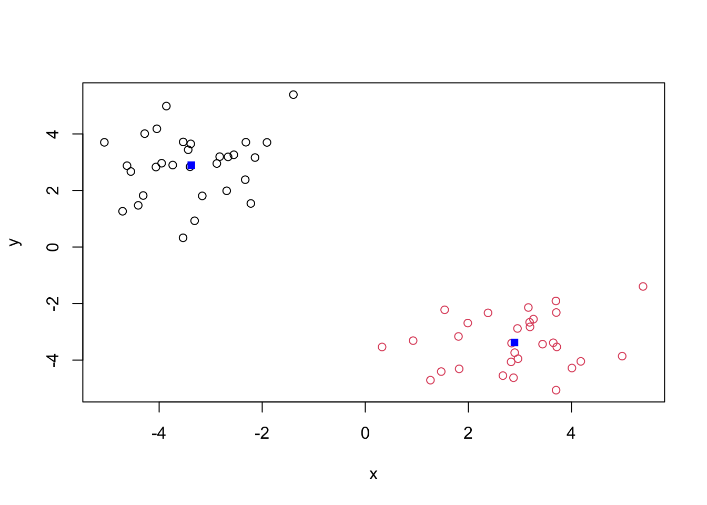
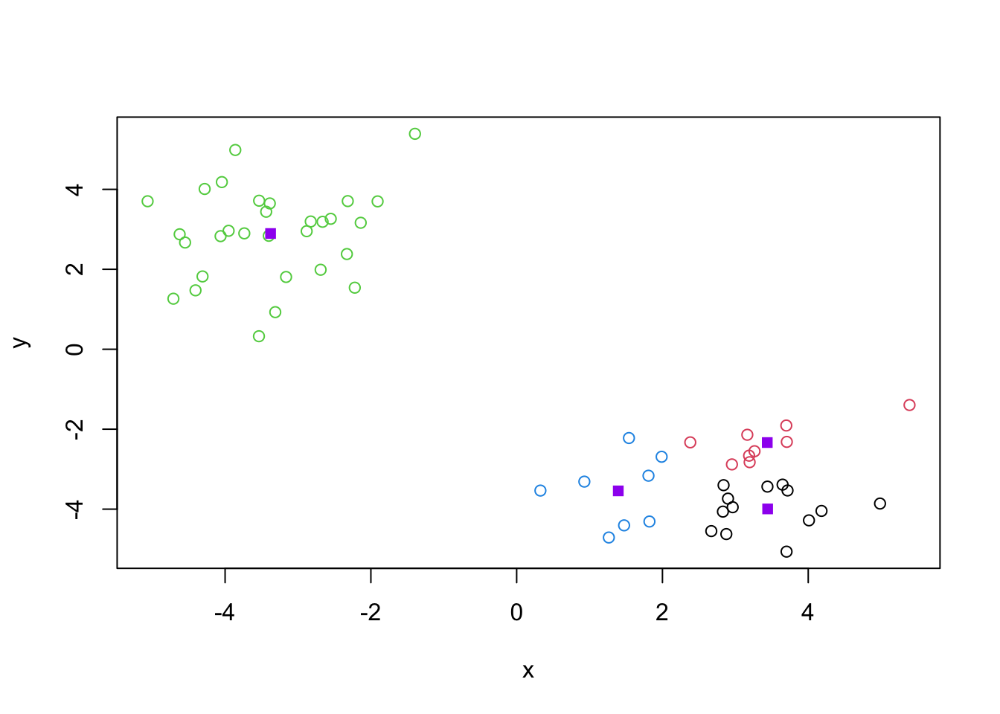
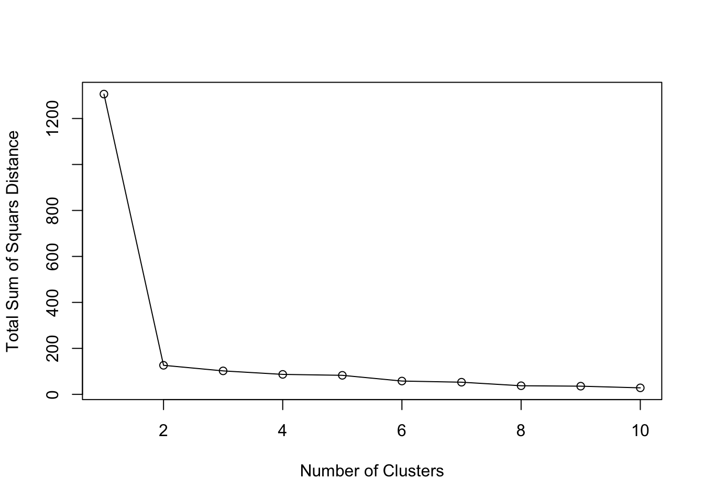
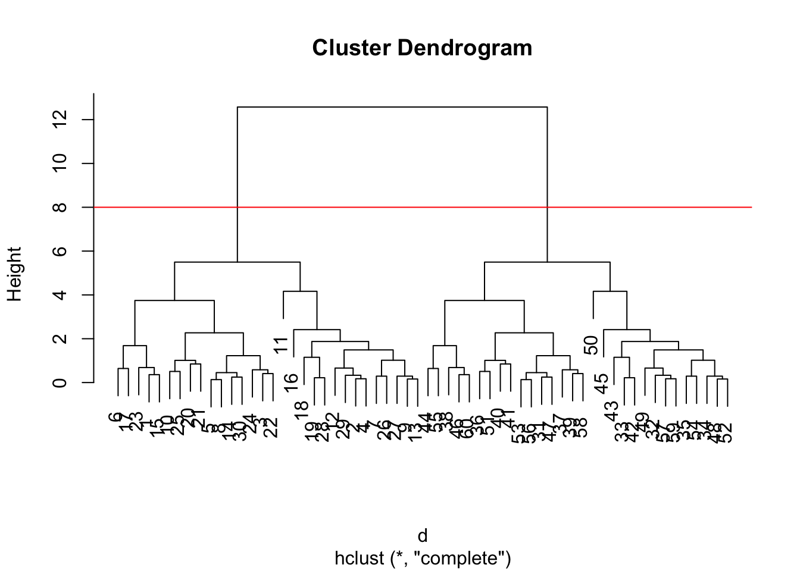
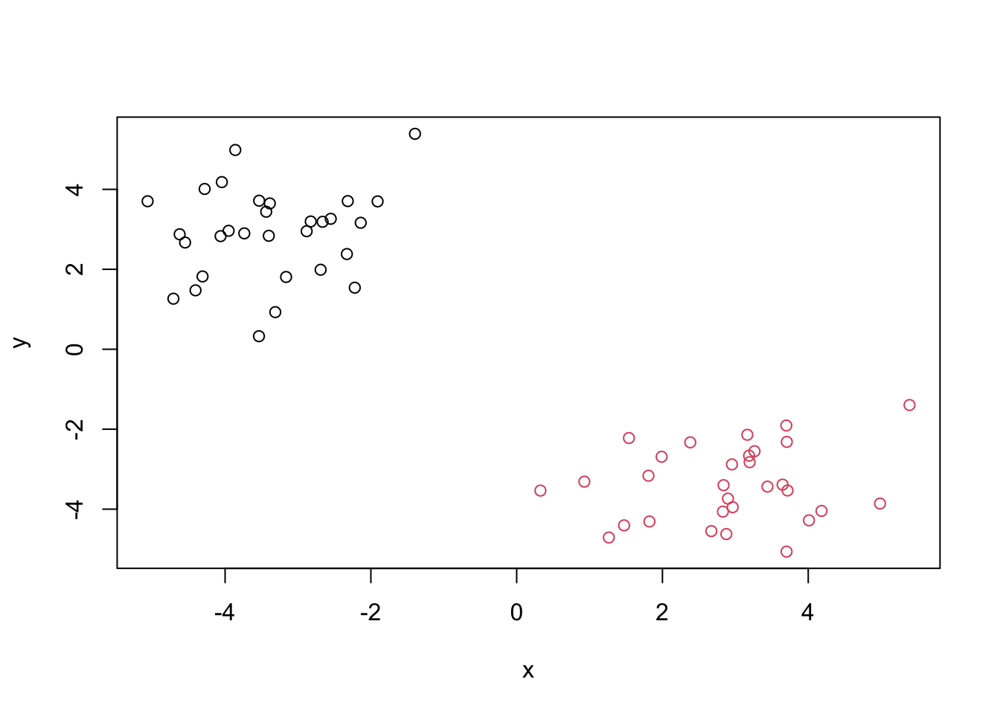
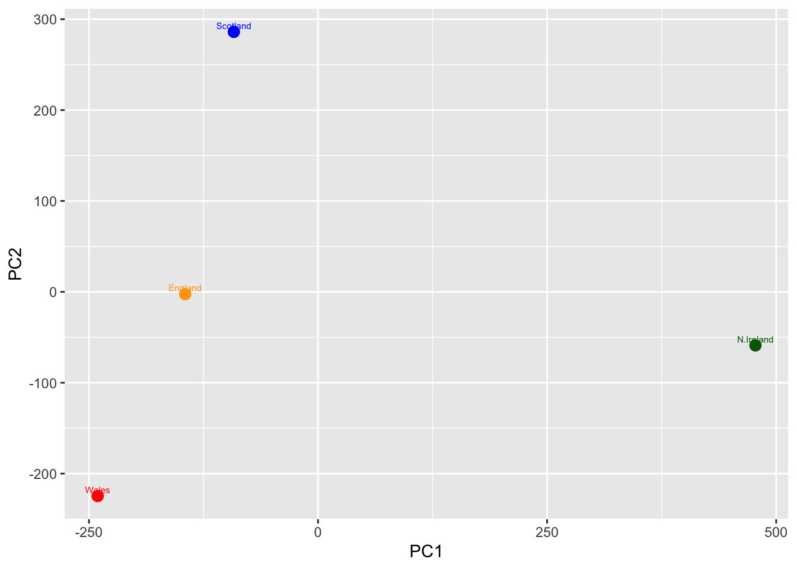
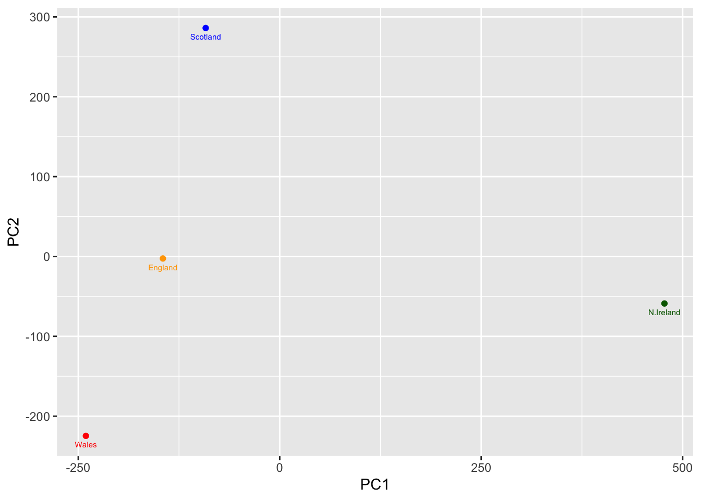

hist( rnorm(10000, mean=3) )
##Background
Today we will explore some core machine learning methods that are very popular in bioinformatics.These include clustering and dimensionallity reduction.
The main function in “base” R for K-means clustering is called ‘kmeans()’.
Before we go too deep let’s make up some “simple” data that we can cluster and know if we are getting a good answer or not. To do this we can use ‘rnorm()’ function:
hist( rnorm(10000, mean=3) )
x <- c( rnorm(30, mean=-3), rnorm(30, +3) )z <- cbind(x=x, y=rev(x))
plot(z)
p <- 1:5
rev(p)[1] 5 4 3 2 1Now we can run ‘kmeans()’ on this input ‘z’ and see what the results look like.
km <- kmeans(z, center=2)
kmK-means clustering with 2 clusters of sizes 30, 30
Cluster means:
x y
1 -3.375980 2.895125
2 2.895125 -3.375980
Clustering vector:
[1] 1 1 1 1 1 1 1 1 1 1 1 1 1 1 1 1 1 1 1 1 1 1 1 1 1 1 1 1 1 1 2 2 2 2 2 2 2 2
[39] 2 2 2 2 2 2 2 2 2 2 2 2 2 2 2 2 2 2 2 2 2 2
Within cluster sum of squares by cluster:
[1] 63.22837 63.22837
(between_SS / total_SS = 90.3 %)
Available components:
[1] "cluster" "centers" "totss" "withinss" "tot.withinss"
[6] "betweenss" "size" "iter" "ifault" attributes(km)$names
[1] "cluster" "centers" "totss" "withinss" "tot.withinss"
[6] "betweenss" "size" "iter" "ifault"
$class
[1] "kmeans"Q. How many pounts are in each cluster?
km$size[1] 30 30Q. What component of your result object details cluster assignment/membership?
km$cluster [1] 1 1 1 1 1 1 1 1 1 1 1 1 1 1 1 1 1 1 1 1 1 1 1 1 1 1 1 1 1 1 2 2 2 2 2 2 2 2
[39] 2 2 2 2 2 2 2 2 2 2 2 2 2 2 2 2 2 2 2 2 2 2Q. What component of your result object details cluster center?
km$centers x y
1 -3.375980 2.895125
2 2.895125 -3.375980Q. Plot ‘z’ colored by the kmeans cluster assignment and add cluster centers as blue points.
plot(z, col=c("magenta","turquoise"))
plot(z, col=km$cluster)
points(km$centers, col="blue", pch=15)
Q. Run a K-means clustering and plot the results asking for 4 clusters. (K=4)
km2 <- kmeans(z, centers = 4)
plot(z, col = km2$cluster)
points(km2$centers, col = "purple", pch = 15)
N.B. You need to tell L-means the number of clusters (i.e. set ‘centers=2’)!!
One approach is to try different values for ‘centers’ and then pick the best
ans <- NULL
for(i in 1:10) {
km <- kmeans(z, centers=i)
ans <- c(ans, km$tot.withinss)
}
plot(ans,type="o",
xlab="Number of Clusters", ylab="Total Sum of Squars Distance")
The main function in “base” R for Hierarchical Clustering is called ‘hclust()’.
This function does not take your “raw” data for clustering. You must first build a “distance matrix” from your data and pass this as a input to ‘hclust()’.
d <- dist(z)
hc <- hclust(d)
hc
Call:
hclust(d = d)
Cluster method : complete
Distance : euclidean
Number of objects: 60 There is a bespoke ‘plot()’ method for ‘hclust()’ result objects.
plot(hc)
abline(h=8, col='red')
Once we have out ‘hclust()’ object (out”tree” of “cluster dendrogram”) we can “cut” the tree to reveal the clustering pattern.
cutree(hc, h=8) [1] 1 1 1 1 1 1 1 1 1 1 1 1 1 1 1 1 1 1 1 1 1 1 1 1 1 1 1 1 1 1 2 2 2 2 2 2 2 2
[39] 2 2 2 2 2 2 2 2 2 2 2 2 2 2 2 2 2 2 2 2 2 2cutree(hc, k=4) [1] 1 2 1 2 1 1 2 1 2 1 2 2 2 1 1 2 1 2 2 1 1 1 1 1 1 2 2 2 2 1 3 4 4 4 4 3 3 3
[39] 3 3 3 4 4 3 4 3 3 4 4 4 3 4 3 4 3 3 4 3 4 3Q. Make a plot of ‘z’ with your hclust results (i.e. colored by cluster membership)
grps <- cutree(hc, k=2)
plot(z, col=grps)
PCA is a dimensionallity reduction method that is popular for revealing patterns in complex datasets.
Let’s look at some data on the eating habits of folks from the UK to see if there are patterns and trends that have some regions being distinct form others.
The data is made available in CSV format so we can use the ‘read.csv()’.
url <- "https://tinyurl.com/UK-foods"
x <- read.csv(url, row.names = 1)
x England Wales Scotland N.Ireland
Cheese 105 103 103 66
Carcass_meat 245 227 242 267
Other_meat 685 803 750 586
Fish 147 160 122 93
Fats_and_oils 193 235 184 209
Sugars 156 175 147 139
Fresh_potatoes 720 874 566 1033
Fresh_Veg 253 265 171 143
Other_Veg 488 570 418 355
Processed_potatoes 198 203 220 187
Processed_Veg 360 365 337 334
Fresh_fruit 1102 1137 957 674
Cereals 1472 1582 1462 1494
Beverages 57 73 53 47
Soft_drinks 1374 1256 1572 1506
Alcoholic_drinks 375 475 458 135
Confectionery 54 64 62 41
- How many rows and columns are in your new data frame named x? What R functions could you use to answer this questions?
The number of rows and columns in the data frame can be determined using functions such as dim(), nrow(), and ncol().
dim(x)[1] 17 4head(x) England Wales Scotland N.Ireland
Cheese 105 103 103 66
Carcass_meat 245 227 242 267
Other_meat 685 803 750 586
Fish 147 160 122 93
Fats_and_oils 193 235 184 209
Sugars 156 175 147 139Q. Which approach to solving the ‘row-names problem’ mentioned above do you prefer and why? Is one approach more robust than another under certain circumstances?
I prefer using read.csv(url, row.names = 1) because it is more concise and avoids the need for additional steps after importing the data. This approach is also less error-prone, since it directly assigns the first column as row names during the import process. In contrast, manually setting row names with row.names(x) <- x[,1] and then removing the column requires extra lines of code and increases the chance of mistakes (such as selecting the wrong column). However, the manual approach can be more flexible if the row names need to be chosen or modified after inspecting the dataset. Overall, the row.names = 1 method is more robust for standard cases, while the manual method is useful when more control is needed.
head(x) England Wales Scotland N.Ireland
Cheese 105 103 103 66
Carcass_meat 245 227 242 267
Other_meat 685 803 750 586
Fish 147 160 122 93
Fats_and_oils 193 235 184 209
Sugars 156 175 147 139barplot(as.matrix(x), beside = F, col = rainbow(nrow(x)))
Fix anything that went wrong with the data import.
library(tidyr)
# Convert data to long format for ggplot with the 'pivot_longer()'
x_long <- x |>
tibble::rownames_to_column("Food") |>
pivot_longer(cols = -Food,
names_to = "Country",
values_to = "Consumption")
dim(x_long)[1] 68 3head(x_long)# A tibble: 6 × 3
Food Country Consumption
<chr> <chr> <int>
1 "Cheese" England 105
2 "Cheese" Wales 103
3 "Cheese" Scotland 103
4 "Cheese" N.Ireland 66
5 "Carcass_meat " England 245
6 "Carcass_meat " Wales 227library(ggplot2)ggplot(x_long) +
aes(x = Country, y = Consumption, fill = Food) +
geom_col() +
theme_bw()
Q5 We can use the pairs() function to generate all pairwise plots for our countries. Can you make sense of the following code and resulting figure? What does it mean if a given point lies on the diagnoal for a given plot?
pairs(x, col=rainbow(nrow(x)), pch=16)
library(pheatmap)
pheatmap(as.matrix(x))
Make some plots to help make sense of obvious trends…
Q6 Based on the pairs and heatmap figures, which countries cluster together and what does this suggest about their food consumption patterns? Can you easily tell what the main differences between N. Ireland and the other countries of the UK in terms of this data set?
England, Wales, and Scotland cluster closely together, showing they have similar food consumption patterns. Northern Ireland is separated from the other three, indicating its diet is different. From the heatmap, Northern Ireland appears to have higher consumption of foods like fresh potatoes and soft drinks, which helps explain why it forms its own cluster. However, it is still not completely obvious which variables drive all the differences without further analysis.
Key-point: Even relatively small datasets can prove challenging to interpret.
The main function in “base” R for PCA is called ‘prcomp()’. This functions wants the ‘observations’ to be rows and the ‘variables’ to be columns.
So here we need to take the transpose of our ‘x’ input object.
pca <- prcomp( t(x) )
summary(pca)Importance of components:
PC1 PC2 PC3 PC4
Standard deviation 324.1502 212.7478 73.87622 2.921e-14
Proportion of Variance 0.6744 0.2905 0.03503 0.000e+00
Cumulative Proportion 0.6744 0.9650 1.00000 1.000e+00The returned ‘pca’ object has components that we can use to make our main result figures:
attributes(pca)$names
[1] "sdev" "rotation" "center" "scale" "x"
$class
[1] "prcomp"The main result figure from this analysis is called a “PC score plot” or “ordenation plot”, “PC plot” or “PC1 vs PC2 plot”.
This plot shows how samples (in this case countries) relate to each other along our new PC axis.
This is our new “reduced-dimensional space”. In this case 2 dimesions, PC1 and PC2, that capture most of the variance in the original 17 dimensional data-set.
library(ggplot2)
ggplot(pca$x) +
aes(PC1, PC2) +
geom_point()
url <- "https://tinyurl.com/UK-foods"
x <- read.csv(url, row.names = 1)
dim(x) # should be 17 4[1] 17 4pca <- prcomp(t(x))
df <- as.data.frame(pca$x)
df$Country <- rownames(df)
dim(df) # should be 4 5[1] 4 5mycols <- c("orange","red","blue","darkgreen")
ggplot(df) +
aes(PC1, PC2, label = Country) +
geom_point(col = mycols, size = 3) +
geom_text(col = mycols, size = 2, vjust = -0.5)
ggplot(pca$x) +
aes(PC1, PC2, label=row.names(pca$x)) +
geom_point(col=mycols) +
geom_text(size=2, vjust=2, col=mycols)
ggplot(pca$rotation) +
aes(x = PC1,
y = reorder(row.names(pca$rotation), PC1)) +
geom_col()